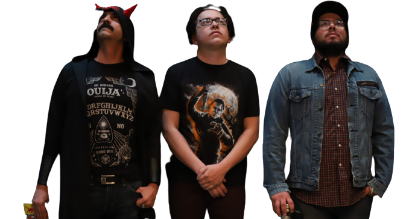

Podcast

Supongo que algunas personas les gusta ver peliculas o series y atras
escuchar musica, pero a mi lo que mas me gusta y emociona es ver que
subieron un nuevo capitulo de algun podcast a youtube espcielmente los
que son de un formato de tipo entrevista o comedia.
Entre los podcasts que mas me gustan se encuentran "Leyendas Legendarias",
"La cotorrisa", "Creativo", "Cosas", "Neurosis y Animo", "DEMENTES Podcast",
etc.